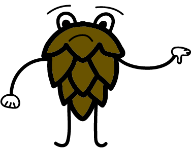

Hvorfor Alkoholfri?
Hvorfor alkoholfri spørg du? Det er simpelt nok. Det er til personen der godt kan lide smagen af øl, men ikke gider de trælse bivirkninger som alkoholen har. Lad os give dig nogle eksempler på, hvorfor alkoholfri øl er en god ting!
Sundere alternativ
Alkoholfri øl tilbyder et sundere valg ved at undgå de negative sundhedsmæssige konsekvenser af alkohol, såsom leverskade og afhængighed, samtidig med at den har lavere kalorieindhold.
Inkluderende
Alkoholfri øl gør det muligt for folk, der afstår fra alkohol af forskellige årsager, at deltage i sociale drikkearrangementer uden at føle sig udeladt.
Ingen beruselse
Denne øltype tilbyder den traditionelle øloplevelse uden risikoen for beruselse, hvilket gør den ideel til begivenheder, hvor man skal forblive ædru.
Stigende popularitet
Med en stigende bevidsthed om sundhed og livsstilsværdier vokser efterspørgslen efter alkoholfri øl.
Hvis du stadigvæk ikke føler dig klar til at prøve alkoholfri øl, så burde du læse nogle af de negative ting som alkoholrige øl bidrager med herunder.
Sundhedsrisici
Regelmæssigt forbrug af alkoholholdig øl er forbundet med forskellige sundhedsproblemer, herunder leversygdom, hjerteproblemer og øget risiko for visse kræfttyper.
Afhængighedspotentiale
Alkohol er vanedannende, og overdreven forbrug kan føre til alkoholafhængighed.
Mental sundhed
Langvarigt alkoholforbrug kan påvirke den mentale sundhed negativt og bidrage til problemer som depression og angst.
Nedsat dømmekraft og ulykker
Alkohol nedsætter dømmekraft og koordination, hvilket øger risikoen for ulykker og skader.

Hvis du skulle have lyst til at læse mere detaljeret informationer, kan du altid besøge siderne herunder.